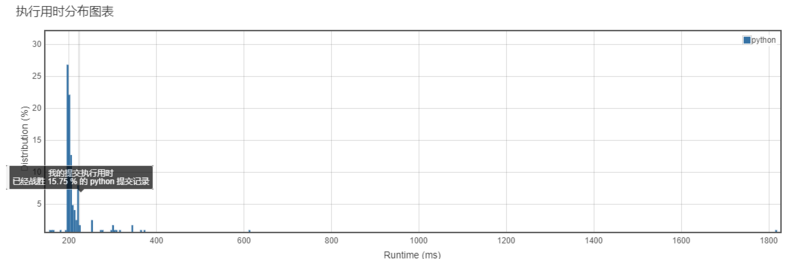
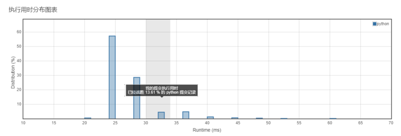
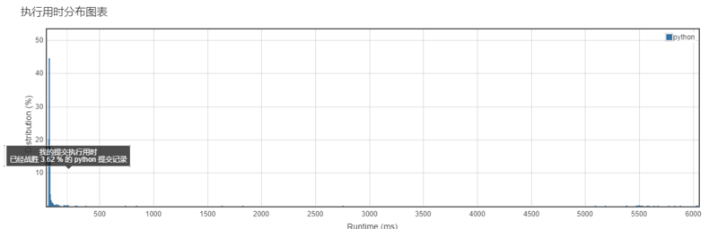
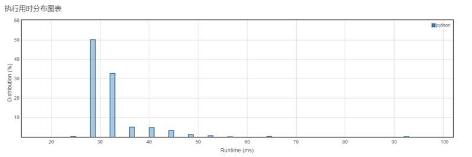
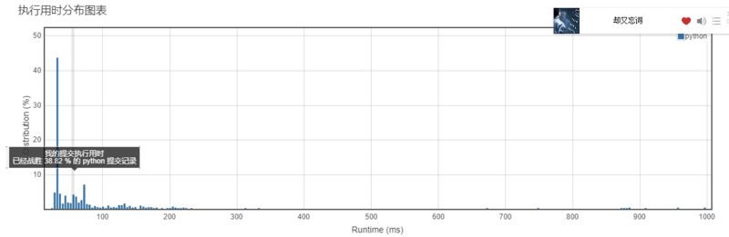
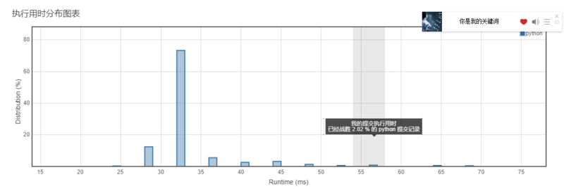

<!DOCTYPE html>
<html>
<head><meta name="generator" content="Hexo 3.8.0">
  <meta charset="utf-8">
  
  <title>Aloha | Gaga酱的奇思妙想</title>
  <meta name="viewport" content="width=device-width, initial-scale=1, maximum-scale=1">
  
    <meta name="keywords" content="萌萌の嘎嘎">
  
  
  
  
  <meta name="description" content="终于从视频制作中被解救的小李！">
<meta name="keywords" content="leetcode,python">
<meta property="og:type" content="article">
<meta property="og:title" content="小李飞刀：做题第十弹！">
<meta property="og:url" content="http://yoursite.com/2019/03/26/小李飞刀：做题第十弹！/index.html">
<meta property="og:site_name" content="Gaga酱の奇思妙想">
<meta property="og:description" content="终于从视频制作中被解救的小李！">
<meta property="og:locale" content="zh-Hans">
<meta property="og:image" content="http://yoursite.com/2019/03/26/小李飞刀：做题第十弹！/1.png">
<meta property="og:image" content="http://yoursite.com/2019/03/26/小李飞刀：做题第十弹！/2.png">
<meta property="og:image" content="http://yoursite.com/2019/03/26/小李飞刀：做题第十弹！/3.png">
<meta property="og:image" content="http://yoursite.com/2019/03/26/小李飞刀：做题第十弹！/4.png">
<meta property="og:image" content="http://yoursite.com/2019/03/26/小李飞刀：做题第十弹！/5.png">
<meta property="og:image" content="http://yoursite.com/2019/03/26/小李飞刀：做题第十弹！/6.png">
<meta property="og:updated_time" content="2019-04-10T16:59:37.685Z">
<meta name="twitter:card" content="summary">
<meta name="twitter:title" content="小李飞刀：做题第十弹！">
<meta name="twitter:description" content="终于从视频制作中被解救的小李！">
<meta name="twitter:image" content="http://yoursite.com/2019/03/26/小李飞刀：做题第十弹！/1.png">
  
  <link rel="icon" href="/css/images/favicon.png">
  
    <link href="//fonts.googleapis.com/css?family=Source+Code+Pro" rel="stylesheet" type="text/css">
  
  <link href="https://fonts.googleapis.com/css?family=Open+Sans|Montserrat:700" rel="stylesheet" type="text/css">
  <link href="https://fonts.googleapis.com/css?family=Roboto:400,300,300italic,400italic" rel="stylesheet" type="text/css">
  <link href="//cdn.bootcss.com/font-awesome/4.6.3/css/font-awesome.min.css" rel="stylesheet">
  <style type="text/css">
    @font-face{font-family:futura-pt;src:url(https://use.typekit.net/af/9749f0/00000000000000000001008f/27/l?subset_id=2&fvd=n5) format("woff2");font-weight:500;font-style:normal;}
    @font-face{font-family:futura-pt;src:url(https://use.typekit.net/af/90cf9f/000000000000000000010091/27/l?subset_id=2&fvd=n7) format("woff2");font-weight:500;font-style:normal;}
    @font-face{font-family:futura-pt;src:url(https://use.typekit.net/af/8a5494/000000000000000000013365/27/l?subset_id=2&fvd=n4) format("woff2");font-weight:lighter;font-style:normal;}
    @font-face{font-family:futura-pt;src:url(https://use.typekit.net/af/d337d8/000000000000000000010095/27/l?subset_id=2&fvd=i4) format("woff2");font-weight:400;font-style:italic;}</style>
    
  <link rel="stylesheet" id="athemes-headings-fonts-css" href="//fonts.googleapis.com/css?family=Yanone+Kaffeesatz%3A200%2C300%2C400%2C700&amp;ver=4.6.1" type="text/css" media="all">

  <link rel="stylesheet" id="athemes-headings-fonts-css" href="//fonts.googleapis.com/css?family=Oswald%3A300%2C400%2C700&amp;ver=4.6.1" type="text/css" media="all">
  <link rel="stylesheet" href="/css/style.css">

  <script src="/js/jquery-3.1.1.min.js"></script>

  <!-- Bootstrap core CSS -->
  <link rel="stylesheet" href="/css/bootstrap.css">
  <link rel="stylesheet" href="/css/fashion.css">
  <link rel="stylesheet" href="/css/glyphs.css">
  <!-- Global site tag (gtag.js) - Google Analytics -->
  <script async src="https://www.googletagmanager.com/gtag/js?id=UA-142486934-1"></script>
  <script>
    window.dataLayer = window.dataLayer || [];
    function gtag(){dataLayer.push(arguments);}
    gtag('js', new Date());

    gtag('config', 'UA-142486934-1');
  </script>


</head>
</html>


  <body data-spy="scroll" data-target="#toc" data-offset="50">


  
  
  <div class="site-header-image">
    
  </div>

  <div id="header-blur" class="site-header-image blur" style="position: absolute; top:0; height: 207px; min-height: 207px; min-width: 100%;">
    
  </div>

  <script>
        var imgUrls = "css/images/pic0.jpg,css/images/pic2.png,css/images/pic4.jpg".split(",");
        var random = Math.floor((Math.random() * imgUrls.length ));
        if (imgUrls[random].startsWith('http') || imgUrls[random].indexOf('://') >= 0) {
          document.getElementById("originBg").src=imgUrls[random];
          document.getElementById("blurBg").src=imgUrls[random];
        } else {
          document.getElementById("originBg").src='/' + imgUrls[random];
          document.getElementById("blurBg").src='/' + imgUrls[random];
        }
    </script>


<header id="allheader" class="site-header" role="banner" style="width: 100%; position: absolute; top:0; background: rgba(255,255,255,.8);">
  <div class="clearfix container">
      <div class="site-branding">

          <h3 class="site-title">
            
              <a href="/" title="Gaga酱の奇思妙想" rel="home"> Gaga酱の奇思妙想 </a>
            
          </h3>
          
          
            <div class="site-description">深水静流</div>
          
            
          <nav id="main-navigation" class="main-navigation" role="navigation">
            <a class="nav-open">Menu</a>
            <a class="nav-close">Close</a>

            <div class="clearfix sf-menu">
              <ul id="main-nav" class="menu sf-js-enabled sf-arrows" style="touch-action: pan-y;">
                    
                      <li class="menu-item menu-item-type-custom menu-item-object-custom menu-item-home menu-item-1663"> <a class href="/">冲鸭❤</a> </li>
                    
                      <li class="menu-item menu-item-type-custom menu-item-object-custom menu-item-home menu-item-1663"> <a class href="/archives">archives❤</a> </li>
                    
                      <li class="menu-item menu-item-type-custom menu-item-object-custom menu-item-home menu-item-1663"> <a class href="/categories">碎碎念的基本法❤</a> </li>
                    
                      <li class="menu-item menu-item-type-custom menu-item-object-custom menu-item-home menu-item-1663"> <a class href="/tags">tags❤</a> </li>
                    
                      <li class="menu-item menu-item-type-custom menu-item-object-custom menu-item-home menu-item-1663"> <a class href="/about">岁月如歌❤</a> </li>
                    
                      <li class="menu-item menu-item-type-custom menu-item-object-custom menu-item-home menu-item-1663"> <a class href="/books">阅❤</a> </li>
                    
                      <li class="menu-item menu-item-type-custom menu-item-object-custom menu-item-home menu-item-1663"> <a class href="/movies">影❤</a> </li>
                    
              </ul>
            </div>
          </nav>

      </div>
  </div>
</header>


  <div id="container">
    <div id="wrap">
            
      <div id="content" class="outer">
        
          <section id="main" style="float:none;"><article id="w-小李飞刀：做题第十弹！" style="width: 66%; float:left;" class="article article-type-w" itemscope itemprop="blogPost">
  <div id="articleInner" class="clearfix post-1016 post type-post status-publish format-standard has-post-thumbnail hentry category-template-2 category-uncategorized tag-codex tag-edge-case tag-featured-image tag-image tag-template">
    
    
      <header class="article-header">
        
  
    <h1 class="thumb" itemprop="name">
      小李飞刀：做题第十弹！
    </h1>
  

      </header>
    
    <div class="article-meta">
      
	<a href="/2019/03/26/小李飞刀：做题第十弹！/" class="article-date">
	  <time datetime="2019-03-26T12:30:28.000Z" itemprop="datePublished">March 26, 2019</time>
	</a>

      
	<span class="ico-folder"></span>
    <a class="article-category-link" href="/categories/小李の放学后/">小李の放学后</a>
 
      
    </div>
    <div class="article-entry" itemprop="articleBody">
      
        <p></p>
<h4 id="写在前面"><a href="#写在前面" class="headerlink" title="写在前面"></a>写在前面</h4><p>这几天断断续续做了题目，也在慢慢体会一些数据思维。<br>终于不用边做视频边写题目啦~<br>开心~<br>把这几天的题解发一下~</p>
<h4 id="认真做题的分割线"><a href="#认真做题的分割线" class="headerlink" title="认真做题的分割线"></a>认真做题的分割线</h4><h5 id="第一题"><a href="#第一题" class="headerlink" title="第一题"></a>第一题</h5><p><strong><a href="https://leetcode-cn.com/problems/squares-of-a-sorted-array/" target="_blank" rel="noopener">977. 有序数组的平方</a></strong><br><strong>难度：简单</strong><br>给定一个按非递减顺序排序的整数数组 A，返回每个数字的平方组成的新数组，要求也按非递减顺序排序。<br><strong>我的题解：</strong><br><figure class="highlight python"><table><tr><td class="code"><pre><span class="line"><span class="class"><span class="keyword">class</span> <span class="title">Solution</span><span class="params">(object)</span>:</span></span><br><span class="line">    <span class="function"><span class="keyword">def</span> <span class="title">sortedSquares</span><span class="params">(self, A)</span>:</span></span><br><span class="line">        <span class="string">"""</span></span><br><span class="line"><span class="string">        :type A: List[int]</span></span><br><span class="line"><span class="string">        :rtype: List[int]</span></span><br><span class="line"><span class="string">        """</span></span><br><span class="line">        result = [<span class="number">0</span>]*len(A)</span><br><span class="line">        m = <span class="number">0</span> </span><br><span class="line">        n = k = len(A)<span class="number">-1</span> </span><br><span class="line">        <span class="keyword">while</span> m &lt;= n:</span><br><span class="line">            <span class="keyword">if</span> A[m]**<span class="number">2</span> &lt; A[n]**<span class="number">2</span>:</span><br><span class="line">                result[k] = A[n]**<span class="number">2</span></span><br><span class="line">                n = n <span class="number">-1</span></span><br><span class="line">            <span class="keyword">else</span>:</span><br><span class="line">                result[k] = A[m]**<span class="number">2</span></span><br><span class="line">                m = m + <span class="number">1</span></span><br><span class="line">            k = k - <span class="number">1</span></span><br><span class="line">        <span class="keyword">return</span> result</span><br></pre></td></tr></table></figure></p>
<p></p>
<p><strong>我的思路：</strong><br>这题参考了思路，有点类似之前做过的一题，因为可能存在负数，而且为了减小循环长度，分别从两头来进行计算判断，并判断最大值，从数组的末尾开始计入。</p>
<h5 id="第二题"><a href="#第二题" class="headerlink" title="第二题"></a>第二题</h5><p><strong><a href="https://leetcode-cn.com/problems/hamming-distance/" target="_blank" rel="noopener">461. 汉明距离</a></strong><br><strong>难度：简单</strong><br>两个整数之间的<code>汉明距离</code>指的是这两个数字对应二进制位不同的位置的数目。<br>给出两个整数<code>x</code>和<code>y</code>，计算它们之间的汉明距离。<br><strong>我的题解：</strong><br><figure class="highlight python"><table><tr><td class="code"><pre><span class="line"><span class="class"><span class="keyword">class</span> <span class="title">Solution</span><span class="params">(object)</span>:</span></span><br><span class="line">    <span class="function"><span class="keyword">def</span> <span class="title">hammingDistance</span><span class="params">(self, x, y)</span>:</span></span><br><span class="line">        <span class="string">"""</span></span><br><span class="line"><span class="string">        :type x: int</span></span><br><span class="line"><span class="string">        :type y: int</span></span><br><span class="line"><span class="string">        :rtype: int</span></span><br><span class="line"><span class="string">        """</span></span><br><span class="line">        <span class="keyword">return</span> (bin(x^y)).count(<span class="string">'1'</span>)</span><br></pre></td></tr></table></figure></p>
<p></p>
<p><strong>我的思路：</strong><br>这题用异或，判断二进制下剩余的1即可。</p>
<h5 id="第三题"><a href="#第三题" class="headerlink" title="第三题"></a>第三题</h5><p><strong><a href="https://leetcode-cn.com/problems/best-time-to-buy-and-sell-stock/" target="_blank" rel="noopener">121. 买卖股票的最佳时机</a></strong><br><strong>难度：简单</strong><br>给定一个数组，它的第 i 个元素是一支给定股票第 i 天的价格。<br>如果你最多只允许完成一笔交易（即买入和卖出一支股票），设计一个算法来计算你所能获取的最大利润。<br>注意你不能在买入股票前卖出股票。<br><strong>我的题解：</strong><br><figure class="highlight python"><table><tr><td class="code"><pre><span class="line"><span class="class"><span class="keyword">class</span> <span class="title">Solution</span><span class="params">(object)</span>:</span></span><br><span class="line">    <span class="function"><span class="keyword">def</span> <span class="title">maxProfit</span><span class="params">(self, prices)</span>:</span></span><br><span class="line">        <span class="string">"""</span></span><br><span class="line"><span class="string">        :type prices: List[int]</span></span><br><span class="line"><span class="string">        :rtype: int</span></span><br><span class="line"><span class="string">        """</span></span><br><span class="line">        min_p, max_p = <span class="number">999999</span>, <span class="number">0</span></span><br><span class="line">        <span class="keyword">for</span> i <span class="keyword">in</span> range(len(prices)):</span><br><span class="line">            min_p = min(min_p, prices[i])</span><br><span class="line">            max_p = max(max_p, prices[i] - min_p)</span><br><span class="line">        <span class="keyword">return</span> max_p</span><br></pre></td></tr></table></figure></p>
<p></p>
<p><strong>我的思路：</strong><br>为了获取最大的利润，我们必须找到最低的价格，并用当前日期的价格减去最低价格，获得利润。<br>这题也是<code>动态规划</code>思路，最关键要找到最低价格是我们必须判断的点，接着判断最大的利润值，不断进行比对。</p>
<h5 id="第四题"><a href="#第四题" class="headerlink" title="第四题"></a>第四题</h5><p><strong><a href="https://leetcode-cn.com/problems/best-time-to-buy-and-sell-stock-ii/" target="_blank" rel="noopener">122. 买卖股票的最佳时机 II</a></strong><br><strong>难度：简单</strong><br>给定一个数组，它的第 i 个元素是一支给定股票第 i 天的价格。<br>设计一个算法来计算你所能获取的最大利润。你可以尽可能地完成更多的交易（多次买卖一支股票）。<br><strong>注意</strong>：你不能同时参与多笔交易（你必须在再次购买前出售掉之前的股票）。<br><strong>我的题解：</strong><br><figure class="highlight python"><table><tr><td class="code"><pre><span class="line"><span class="class"><span class="keyword">class</span> <span class="title">Solution</span><span class="params">(object)</span>:</span></span><br><span class="line">    <span class="function"><span class="keyword">def</span> <span class="title">maxProfit</span><span class="params">(self, prices)</span>:</span></span><br><span class="line">        <span class="string">"""</span></span><br><span class="line"><span class="string">        :type prices: List[int]</span></span><br><span class="line"><span class="string">        :rtype: int</span></span><br><span class="line"><span class="string">        """</span></span><br><span class="line">        profit = <span class="number">0</span></span><br><span class="line">        <span class="keyword">for</span> i <span class="keyword">in</span> range(len(prices)<span class="number">-1</span>):</span><br><span class="line">            <span class="keyword">if</span> prices[i+<span class="number">1</span>] - prices[i] &gt; <span class="number">0</span>:</span><br><span class="line">                profit += prices[i+<span class="number">1</span>] - prices[i]</span><br><span class="line">        <span class="keyword">return</span> profit</span><br></pre></td></tr></table></figure></p>
<p></p>
<p><strong>我的思路：</strong><br>这题需要考虑到，<br>1.当天卖出后可以当天继续买入；<br>2.为了买卖尽可能多次，当后来日期的金额&gt;买入日期的时候，即做卖出动作，获取收益。</p>
<h5 id="第五题"><a href="#第五题" class="headerlink" title="第五题"></a>第五题</h5><p><strong><a href="https://leetcode-cn.com/problems/reverse-words-in-a-string-iii/" target="_blank" rel="noopener">557. 反转字符串中的单词 III</a></strong><br><strong>难度：简单</strong><br>给定一个字符串，你需要反转字符串中每个单词的字符顺序，同时仍保留空格和单词的初始顺序。<br><strong>我的题解：</strong><br><figure class="highlight python"><table><tr><td class="code"><pre><span class="line"><span class="class"><span class="keyword">class</span> <span class="title">Solution</span><span class="params">(object)</span>:</span></span><br><span class="line">    <span class="function"><span class="keyword">def</span> <span class="title">reverseWords</span><span class="params">(self, s)</span>:</span></span><br><span class="line">        <span class="string">"""</span></span><br><span class="line"><span class="string">        :type s: str</span></span><br><span class="line"><span class="string">        :rtype: str</span></span><br><span class="line"><span class="string">        """</span></span><br><span class="line">        l = s.split(<span class="string">" "</span>)</span><br><span class="line">        <span class="keyword">return</span> <span class="string">" "</span>.join(map(<span class="keyword">lambda</span> x:x[::<span class="number">-1</span>],l))</span><br></pre></td></tr></table></figure></p>
<p></p>
<p><strong>我的思路：</strong><br>这题参考了评论里的方案，python似乎在字符串的处理上有先天的优势。<br>顺便复习了下知识点：</p>
<ul>
<li>join 用于连接字符串 “-“.join([a,b]）</li>
<li>map map(函数，需要处理的对象）</li>
<li>lambda表达式 匿名函数，一目了然的输入和输出</li>
<li>[:]数组默认参数为0和len-1，等于复制一份数组，即a[:]=a</li>
<li>[::-1] 当步长小于0的时候，默认缺省值为-1和len-1,即a[::-1] = a[len(a)-1:-1:-1]，即逆序遍历</li>
</ul>
<h5 id="第六题"><a href="#第六题" class="headerlink" title="第六题"></a>第六题</h5><p><strong><a href="https://leetcode-cn.com/problems/power-of-two/" target="_blank" rel="noopener">231. 2的幂</a></strong><br><strong>难度：简单</strong><br>给定一个整数，编写一个函数来判断它是否是 2 的幂次方<br><strong>我的题解：</strong><br><figure class="highlight python"><table><tr><td class="code"><pre><span class="line"><span class="class"><span class="keyword">class</span> <span class="title">Solution</span><span class="params">(object)</span>:</span></span><br><span class="line">    <span class="function"><span class="keyword">def</span> <span class="title">isPowerOfTwo</span><span class="params">(self, n)</span>:</span></span><br><span class="line">        <span class="string">"""</span></span><br><span class="line"><span class="string">        :type n: int</span></span><br><span class="line"><span class="string">        :rtype: bool</span></span><br><span class="line"><span class="string">        """</span></span><br><span class="line">        <span class="keyword">if</span> n == <span class="number">0</span>:</span><br><span class="line">            <span class="keyword">return</span> <span class="literal">False</span></span><br><span class="line">        <span class="keyword">if</span> n == <span class="number">1</span>:</span><br><span class="line">            <span class="keyword">return</span> <span class="literal">True</span></span><br><span class="line">        <span class="keyword">if</span> n % <span class="number">2</span> == <span class="number">1</span>:</span><br><span class="line">            <span class="keyword">return</span> <span class="literal">False</span></span><br><span class="line">        <span class="keyword">elif</span> n == <span class="number">2</span>:</span><br><span class="line">            <span class="keyword">return</span> <span class="literal">True</span></span><br><span class="line">        <span class="keyword">else</span>:</span><br><span class="line">            <span class="keyword">return</span> self.isPowerOfTwo(n/<span class="number">2</span>)</span><br></pre></td></tr></table></figure></p>
<p></p>
<p><strong>我的思路：</strong><br>这题用了非常暴力的方法，但是还是提交错了两次，少判断了为<code>0</code>和<code>1</code>的情况。<br>因为自己写的递归，就非常的开心…emmm递归栈有趣~<br>但是效率不太高</p>
<h4 id="总结一下"><a href="#总结一下" class="headerlink" title="总结一下"></a>总结一下</h4>
      
    </div>
    <footer class="entry-meta entry-footer">
      
	<span class="ico-folder"></span>
    <a class="article-category-link" href="/categories/小李の放学后/">小李の放学后</a>

      
  <span class="ico-tags"></span>
  <ul class="article-tag-list"><li class="article-tag-list-item"><a class="article-tag-list-link" href="/tags/leetcode/">leetcode</a></li><li class="article-tag-list-item"><a class="article-tag-list-link" href="/tags/python/">python</a></li></ul>

      
        
	<div id="comment">
	
	<!-- 多说评论框 start -->
	 <div class="ds-thread" data-thread-key="/2019/03/26/小李飞刀：做题第十弹！/" data-title="小李飞刀：做题第十弹！" data-url="http://yoursite.com/2019/03/26/小李飞刀：做题第十弹！/"></div>
	<!-- 多说评论框 end -->
	<!-- 多说公共JS代码 start (一个网页只需插入一次) -->
	<script type="text/javascript">
	var duoshuoQuery = {short_name:"iTimeTraveler"};
	  (function() {
	    var ds = document.createElement('script');
	    ds.type = 'text/javascript';ds.async = true;
	    ds.src = (document.location.protocol == 'https:' ? 'https:' : 'http:') + '//static.duoshuo.com/embed.js';
	    ds.charset = 'UTF-8';
	    (document.getElementsByTagName('head')[0] 
	     || document.getElementsByTagName('body')[0]).appendChild(ds);
	  })();
	  </script>
	<!-- 多说公共JS代码 end -->
	
	</div>
	<link rel="stylesheet" href="/css/comment.css">


      
    </footer>
    <hr class="entry-footer-hr">
  </div>
  
    
<nav id="article-nav">
  
    <a href="/2019/03/26/磨刀霍霍：爬虫我又来啦/" id="article-nav-newer" class="article-nav-link-wrap">
      <strong class="article-nav-caption">Newer</strong>
      <div class="article-nav-title">
        
          磨刀霍霍：爬虫我又来啦~
        
      </div>
    </a>
  
  
    <a href="/2019/03/24/Y想-190324/" id="article-nav-older" class="article-nav-link-wrap">
      <strong class="article-nav-caption">Older</strong>
      <div class="article-nav-title">Y想-190324</div>
    </a>
  
</nav>

  
</article>


<!-- Table of Contents -->

  <aside id="sidebar">
    <div id="toc" class="toc-article">
    <strong class="toc-title">Contents</strong>
    
      <ol class="nav"><li class="nav-item nav-level-4"><a class="nav-link" href="#写在前面"><span class="nav-number">1.</span> <span class="nav-text">写在前面</span></a></li><li class="nav-item nav-level-4"><a class="nav-link" href="#认真做题的分割线"><span class="nav-number">2.</span> <span class="nav-text">认真做题的分割线</span></a><ol class="nav-child"><li class="nav-item nav-level-5"><a class="nav-link" href="#第一题"><span class="nav-number">2.1.</span> <span class="nav-text">第一题</span></a></li><li class="nav-item nav-level-5"><a class="nav-link" href="#第二题"><span class="nav-number">2.2.</span> <span class="nav-text">第二题</span></a></li><li class="nav-item nav-level-5"><a class="nav-link" href="#第三题"><span class="nav-number">2.3.</span> <span class="nav-text">第三题</span></a></li><li class="nav-item nav-level-5"><a class="nav-link" href="#第四题"><span class="nav-number">2.4.</span> <span class="nav-text">第四题</span></a></li><li class="nav-item nav-level-5"><a class="nav-link" href="#第五题"><span class="nav-number">2.5.</span> <span class="nav-text">第五题</span></a></li><li class="nav-item nav-level-5"><a class="nav-link" href="#第六题"><span class="nav-number">2.6.</span> <span class="nav-text">第六题</span></a></li></ol></li><li class="nav-item nav-level-4"><a class="nav-link" href="#总结一下"><span class="nav-number">3.</span> <span class="nav-text">总结一下</span></a></li></ol>
    
    </div>
  </aside>


</section>
        
      </div>

    </div>
    <!-- <nav id="mobile-nav">
  
    <a href="/" class="mobile-nav-link">冲鸭❤</a>
  
    <a href="/archives" class="mobile-nav-link">archives❤</a>
  
    <a href="/categories" class="mobile-nav-link">碎碎念的基本法❤</a>
  
    <a href="/tags" class="mobile-nav-link">Tags❤</a>
  
    <a href="/about" class="mobile-nav-link">岁月如歌❤</a>
  
    <a href="/books" class="mobile-nav-link">阅❤</a>
  
    <a href="/movies" class="mobile-nav-link">影❤</a>
  
</nav> -->
    <footer id="footer" class="site-footer">
  

  <div class="clearfix container">
      <div class="site-info">
	      &copy; 2019 Gaga酱の奇思妙想 All Rights Reserved.
        
      </div>
      <div class="site-credit">
        Theme by <a href="https://github.com/iTimeTraveler/hexo-theme-hipaper" target="_blank">hipaper</a>
      </div>
  </div>
</footer>


<!-- min height -->

<script>
    var wrapdiv = document.getElementById("wrap");
    var contentdiv = document.getElementById("content");

    wrapdiv.style.minHeight = document.body.offsetHeight - document.getElementById("allheader").offsetHeight - document.getElementById("footer").offsetHeight + "px";
    contentdiv.style.minHeight = document.body.offsetHeight - document.getElementById("allheader").offsetHeight - document.getElementById("footer").offsetHeight + "px";


    <!-- headerblur min height -->
    
      var headerblur = document.getElementById("header-blur");
      headerblur.style.minHeight = window.getComputedStyle(document.getElementById("allheader"), null).height;
    
    
</script>
    
<div style="display: none;">
  <script src="https://s11.cnzz.com/z_stat.php?id=1260716016&web_id=1260716016" language="JavaScript"></script>
</div>

<!-- mathjax config similar to math.stackexchange -->

<script type="text/x-mathjax-config">
  MathJax.Hub.Config({
    tex2jax: {
      inlineMath: [ ['$','$'], ["\\(","\\)"] ],
      processEscapes: true
    }
  });
</script>

<script type="text/x-mathjax-config">
    MathJax.Hub.Config({
      tex2jax: {
        skipTags: ['script', 'noscript', 'style', 'textarea', 'pre', 'code']
      }
    });
</script>

<script type="text/x-mathjax-config">
    MathJax.Hub.Queue(function() {
        var all = MathJax.Hub.getAllJax(), i;
        for(i=0; i < all.length; i += 1) {
            all[i].SourceElement().parentNode.className += ' has-jax';
        }
    });
</script>

<script type="text/javascript" src="https://cdn.mathjax.org/mathjax/latest/MathJax.js?config=TeX-AMS-MML_HTMLorMML">
</script>


  <link rel="stylesheet" href="/fancybox/jquery.fancybox.css">
  <script src="/fancybox/jquery.fancybox.pack.js"></script>


<script src="/js/script.js"></script>
<script src="/js/bootstrap.js"></script>
<script src="/js/main.js"></script>


  <script type="text/javascript" src="js/love.js"></script>
  <script type="text/javascript" src="js/float.js"></script>
  <script type="text/javascript" src="js/typewriter.js"></script>
  <script type="text/javascript" color="0,104,183" opacity="1" zindex="-1" count="50" src="js/particle.js"></script>
  </div>

  <a id="rocket" href="#top" class=""></a>
  <script type="text/javascript" src="/js/totop.js" async=""></script>
</body>
</html>
